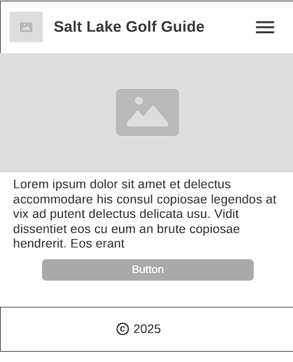
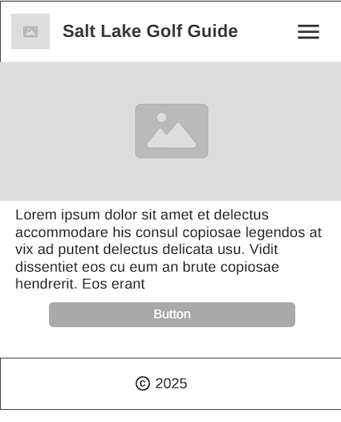

Wireframes
Desktop View:

Mobile View:
A local guide to the best golf courses in the Salt Lake City area
Salt Lake Golf Guide was chosen because it clearly describes the focus of the website: a local guide to golf courses around Salt Lake City. It’s easy to remember and directly speaks to the target audience.
Optional domain: slcgolfguide.com (if available)
The purpose of this site is to help golfers find, compare, and choose golf courses in the Salt Lake City area. It will include details like pricing, difficulty levels, features (such as mountain views or driving ranges), and maps for easy navigation.
Desktop View:
Mobile View:
